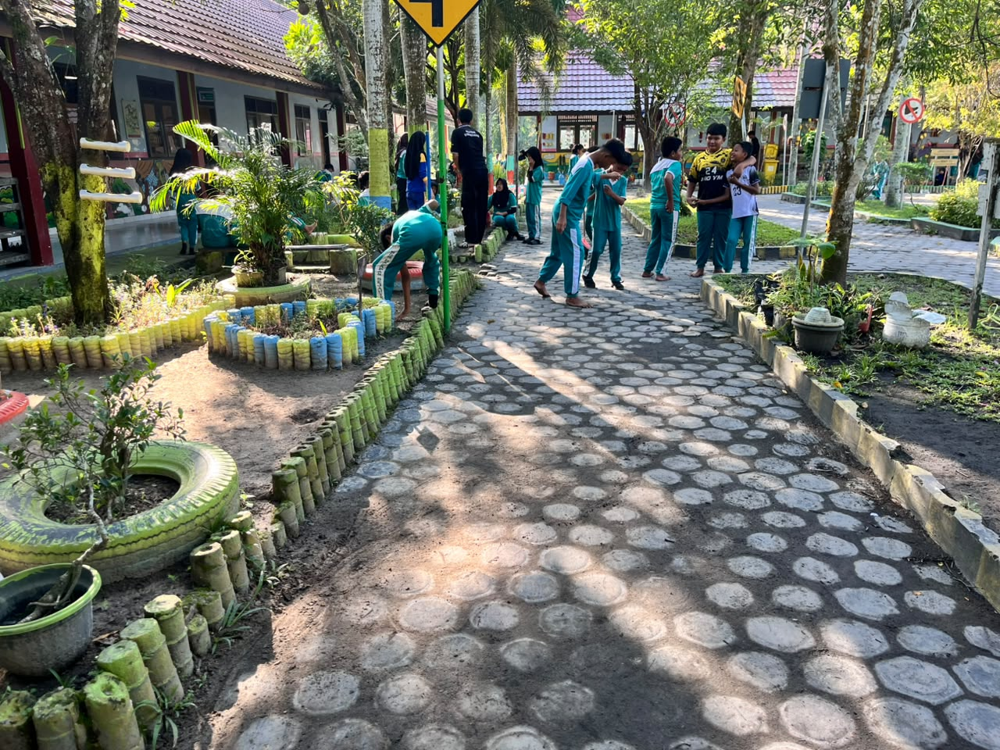

Curriculum Vitae
RIZKY HERMAWAN
Guru SDS HARAPAN SEJAHTERA & Mahasiswa Informatika
Profil Saya
Perkenalkan, nama saya Rizky Hermawan. Saya adalah seorang pendidik yang mengajar di tingkat Sekolah Dasar (SD) swasta di bawah naungan PT Astra Agro Lestari. Mengabdi di area perkebunan kelapa sawit memberikan saya pengalaman berharga dalam membentuk karakter anak bangsa dari dasar.
Saat ini, saya juga berstatus sebagai mahasiswa Informatika PJJ S1. Saya memiliki ketertarikan besar pada dunia teknologi dan pemrograman. Harapan saya, ilmu web yang saya pelajari dapat saya gunakan untuk membuat media pembelajaran digital yang interaktif bagi murid-murid saya di kelas.
Riwayat Pendidikan
| Tahun | Institusi |
|---|---|
| 2026 - Sekarang | Universitas Siber Asia (PJJ S1 Informatika) |
| 2021 - 2025 | Universitas Negeri Yogyakarta (S1 PGSD) |
| 2018 - 2021 | MAN 1 GROBOGAN |
Pengalaman Mengajar
| Nama Kegiatan | Penyelenggara |
|---|---|
| KAMPUS MENGAJAR (2024) | Kemdikbudristek RI |
| PGSD TO SCHOOL (2023) | UNY |
| PGSD MENGAJAR (2021) | UNY |
Keahlian (Skills)
- Mengajar & Manajemen Kelas Dasar
- Pembuatan Media Pembelajaran SD
- Microsoft Office (Word, Excel, PowerPoint)
Sertifikasi & Pelatihan
- Pelatihan Guru Inklusif Dasar (2026)
- Pelatihan Pembelajaran Mendalam Bagi Guru (2025)
- Sertifikasi Practical Office Advance BNSP (2024)
Galeri Kegiatan

